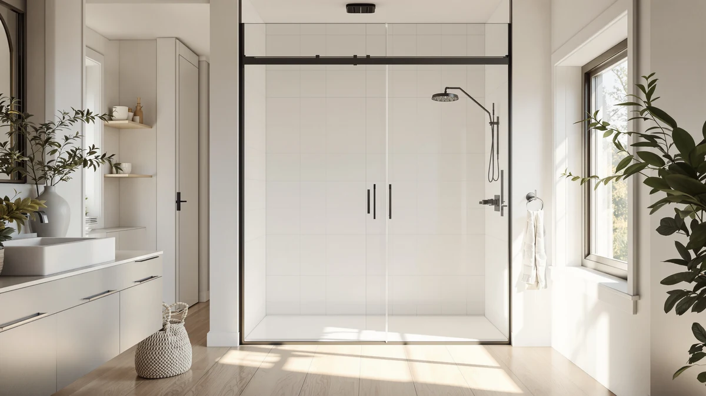

Dimaris Semi Frameless Pivot Review (2026): Worth It?
Prices and picks verified as of September 2026. Independent, reader-supported reviews.


Quick Answer
The Dimaris Semi-Frameless Pivot Shower Door is the pick to buy if your opening measures between 41 and 50 inches wide by 76 inches tall and you want a door that swings open on hinges instead of sliding on a track. At $499.99 it costs more than the three alternatives below, so it only makes sense if that pivot design and adjustable width fit your bathroom.
Our pick: Dimaris Semi-Frameless Pivot Shower Door, $499.99 Check Price on Amazon
Bottom line: our top pick is the Dimaris Semi-Frameless Pivot Shower Door 41-50" W x 76" H at $499.99.
Things to Know Before You Buy
- The Dimaris Semi-Frameless Pivot Shower Door has an adjustable 41 to 50 inch width and a fixed 76 inch height, a different fit profile than the sliding doors compared here.
- At $499.99, it costs more than all three alternatives: the GETPRO Sliding Tub Shower Door at $327.29, the GETPRO Semi-Frameless Shower Door Double at $325.73, and the Frameless Glass Shower Door 56-60" at $319.99.
- A pivot door swings open on hinges and needs floor clearance in front of the opening, unlike a sliding door that stays within the width of the frame.
- Measure your opening at the top, middle, and bottom before ordering, since even an adjustable 41 to 50 inch range needs your rough opening to fall inside that window.
- The listing does not include a verified star rating or review count, so this comparison relies on specs, pricing, and verified owner feedback rather than a rating history.
This dimaris semi frameless pivot review breaks down what the Dimaris Semi-Frameless Pivot Shower Door actually offers for $499.99, using its listed specs, current Amazon pricing, and verified owner feedback rather than a hands-on test in our own bathroom. The pivot design means the door swings open on hinges instead of rolling along a track, and its 41 to 50 inch adjustable width paired with a fixed 76 inch height puts it in a different size category than the three sliding alternatives compared below.
Semi-frameless doors split the difference between a fully framed door, which uses metal channels around every edge of the glass, and a frameless door, which uses minimal hardware and relies on thicker glass to stay rigid. That middle ground usually means a lower price than frameless while still cutting down on the visible metal border that framed doors carry. Whether that trade-off is worth $499.99 for the Dimaris specifically, compared with the lower-priced GETPRO and IronovaPets doors in this comparison, is what the rest of this review works through.
Why You Should Trust Us
Ilane Tall covers bathroom fixtures and shower hardware for Best Shower Doors and focuses on how listed dimensions and pricing translate into real installations. For this dimaris semi frameless pivot review, our editorial team compared the manufacturer's listed specs, current Amazon pricing, and verified buyer feedback against three lower-priced alternatives in a similar category. We do not run a physical testing lab and do not claim to have installed this door ourselves. Our picks come from researching listed specifications, pricing, and what verified owners report after installation, not from hands-on use.
Our Research Experience
Our research process for this dimaris semi frameless pivot review started with the manufacturer's listed dimensions for the Dimaris Semi-Frameless Pivot Shower Door, then moved to Amazon's current pricing and the verified purchase reviews attached to the listing. We compared its 41 to 50 inch adjustable width and pivot hinge design against the sliding mechanisms and width ranges of the GETPRO Sliding Tub Shower Door, the GETPRO Semi-Frameless Shower Door Double, and the Frameless Glass Shower Door 56-60" to see which bathroom layouts each door actually suits. We analysed pricing across all four listings on the same day so this comparison reflects a single snapshot rather than prices pulled from different dates. Where owners report installation issues with a pivot hinge system, we note them directly instead of smoothing them over. We do not own or install these doors, so our conclusions rely on specifications, pricing, and what verified buyers say after their own installation.
Overview & Specs

Dimaris Semi-Frameless Pivot Shower Door
What we like
- Pivot hinge design opens like a regular door instead of rolling along a track
- Adjustable 41 to 50 inch width covers a range of openings rather than one fixed size
- Semi-frameless build cuts down on the visible metal border of a fully framed door
- 76 inch height matches standard shower enclosure heights in most US bathrooms
Flaws but not dealbreakers
- At $499.99, it costs $172.70 to $180.00 more than the three alternatives in this comparison
- A pivot door needs floor clearance in front of the opening to swing open, which a sliding door does not require
- The listing does not specify glass thickness or frame material, so confirm those details before ordering
- No verified star rating or review count is listed, unlike some other shower doors in this category
| Material | — |
| Size | 41-50" W x 76" H |
The Dimaris Semi-Frameless Pivot Shower Door targets a specific installation: an opening between 41 and 50 inches wide and roughly 76 inches tall where you want a door that swings open on a hinge rather than slides along a track. That pivot mechanism is the core difference between this door and the three sliding alternatives in this dimaris semi frameless pivot review, and it changes how much clearance you need in front of the shower as well as how the door looks.
At $499.99, the Dimaris costs more than the GETPRO Sliding Tub Shower Door, the GETPRO Semi-Frameless Shower Door Double, and the Frameless Glass Shower Door 56-60", the three doors compared here. That price gap is the central trade-off in this review. You are paying for a pivot hinge system and an adjustable width range, not for a documented rating history, since the listing does not include verified star ratings. If your opening falls inside that 41 to 50 inch window and you specifically want a pivot door, the premium may be worth it. If your budget is tighter or a sliding door suits your bathroom layout better, one of the three alternatives below is worth comparing first.
What We Liked
The clearest strength of the Dimaris Semi-Frameless Pivot Shower Door is its pivot hinge system. Instead of rolling along a track that can collect grime and require periodic roller maintenance, the door swings open the way a regular door does. For anyone who has dealt with a sticking or derailed sliding panel, that mechanical simplicity is a real advantage this dimaris semi frameless pivot review keeps coming back to.
The adjustable 41 to 50 inch width also gives it more flexibility than a fixed-size door. Rather than needing an exact match, your rough opening only has to fall somewhere inside that nine-inch window, which forgives small measurement errors that would rule out a fixed-size door entirely.
The semi-frameless build is another point in its favor. It skips the full metal perimeter of a framed door while costing less than a fully frameless design would typically run, landing in a middle ground that still looks cleaner than a heavily framed enclosure.
What Could Be Better
Price is the most obvious drawback. At $499.99, the Dimaris Semi-Frameless Pivot Shower Door costs $172.70 more than the GETPRO Sliding Tub Shower Door, $174.26 more than the GETPRO Semi-Frameless Shower Door Double, and $180.00 more than the Frameless Glass Shower Door 56-60". For a door in a similar size category, that gap is hard to justify unless the pivot mechanism specifically matters to you.
A pivot door also needs floor clearance in front of the opening to swing through, space that a sliding door does not require. If your bathroom layout is tight, that swing radius is worth measuring before you commit to this style over a sliding alternative.
The listing does not include a verified star rating, review count, glass thickness, or frame material, so confirm those specifics directly with the seller before ordering if they matter to your renovation plans. That is a gap compared with listings that document those details up front.
Who Is It For?
The Dimaris Semi-Frameless Pivot Shower Door makes the most sense for you if your opening measures between 41 and 50 inches wide and roughly 76 inches tall, and you specifically want a pivot hinge door instead of a sliding panel. It also suits buyers who prioritize mechanical simplicity over the lowest possible price.
It is not the right choice if your bathroom does not have floor clearance for a door to swing open, since a pivot door needs that space in a way a sliding door does not. It is also not the best fit if you are working with a tight renovation budget, since all three alternatives in this comparison cost less for a similar size category.
If you are remodeling a rental property or a budget-conscious bathroom where the pivot mechanism carries less weight, the GETPRO or Frameless Glass alternatives let you put the saved $172.70 to $180.00 toward tile, fixtures, or a better showerhead instead.
Alternatives to Consider
If the Dimaris Semi-Frameless Pivot Shower Door does not match your opening size, bathroom layout, or budget, three sliding doors are worth comparing before you order. The GETPRO Sliding Tub Shower Door swaps the pivot hinge for a straightforward sliding track at $327.29, and the GETPRO Semi-Frameless Shower Door Double keeps the same semi-frameless look as the Dimaris in a double sliding panel design at $325.73. The Frameless Glass Shower Door 56-60" from IronovaPets covers a wider 56 to 60 inch opening at $319.99, useful if your bathroom needs more width than the Dimaris' 41 to 50 inch range allows. None of the three require the floor clearance a pivot door needs to swing open.

Editor’s Pick
GETPRO Sliding Tub Shower Door
A straightforward sliding track mechanism at $327.29, worth a look if you do not need the floor clearance a pivot door requires.
$327.29
Check Price on Amazon
Best Value
GETPRO Semi-Frameless Shower Door Double
A semi-frameless double sliding panel design at $325.73, worth comparing if you want the Dimaris' semi-frameless look with a sliding mechanism instead of a pivot hinge.
$325.73
Check Price on Amazon
Premium Choice
Frameless Glass Shower Door 56-60"
A wider 56 to 60 inch frameless option from IronovaPets at $319.99, worth a look if your opening runs larger than the Dimaris' 41 to 50 inch range.
$319.99
Check Price on AmazonFrequently Asked Questions
How much does the Dimaris Semi-Frameless Pivot Shower Door cost?
The Dimaris Semi-Frameless Pivot Shower Door lists at $499.99, which makes it the most expensive door in this comparison. The GETPRO Sliding Tub Shower Door runs $327.29, the GETPRO Semi-Frameless Shower Door Double is $325.73, and the Frameless Glass Shower Door 56-60" is $319.99.
What size opening does the Dimaris Semi-Frameless Pivot Shower Door fit?
The Dimaris Semi-Frameless Pivot Shower Door has an adjustable 41 to 50 inch width and a fixed 76 inch height. Measure your opening at the top, middle, and bottom before ordering, since your rough opening needs to fall inside that width range for the door to seal properly.
Is a pivot shower door better than a sliding shower door?
Neither style is better across the board. A pivot door like the Dimaris swings open on hinges and needs floor clearance in front of the opening, while a sliding door like the three alternatives in this dimaris semi frameless pivot review rolls along a track and stays within the width of the frame. If your bathroom has room for a door to swing and you want to skip roller maintenance, a pivot door is worth the trade-off. If floor space is tight, a sliding door usually fits better.
Final Verdict
This dimaris semi frameless pivot review comes down to a trade-off between a pivot hinge mechanism and price. At $499.99, the Dimaris Semi-Frameless Pivot Shower Door costs more than every alternative here, but its swing-open design and adjustable 41 to 50 inch width make it the strongest pick if your opening falls inside that range and you specifically want a pivot door instead of a sliding panel. If your bathroom lacks the floor clearance for a door to swing, or your budget is tighter, the GETPRO Sliding Tub Shower Door, GETPRO Semi-Frameless Shower Door Double, or Frameless Glass Shower Door 56-60" alternatives above will likely fit your bathroom and your budget better than paying a premium for the Dimaris' pivot design.